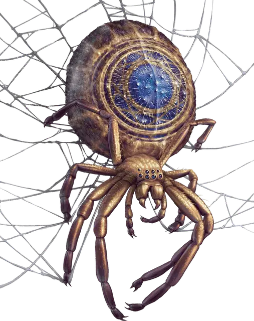

Паук разрушитель
Ruin Spider
Большой Монстр, без мировоззрения

Класс Доспеха 16 (природный доспех)
Хиты 105 (14к10 + 28)
Скорость 40 футов, лазая 40 футов
| мод | спас | ||
|---|---|---|---|
| СИЛ | 16 | +3 | +3 |
| ЛОВ | 18 | +4 | +4 |
| ТЕЛ | 14 | +2 | +2 |
| мод | спас | ||
|---|---|---|---|
| ИНТ | 2 | −4 | −4 |
| МДР | 13 | +1 | +1 |
| ХАР | 4 | −3 | −3 |
Навыки Скрытность +10
Иммунитет к урону кислота
Чувства тёмное зрение 60 футов, пассивное Восприятие 11
Опасность 5 (1800 опыта)
Бонус мастерства +3
Среда обитания Болото, Город, Лес, Пустыня, Подземье
Особенности
Паучье лазанье. Паук может лазать по сложным поверхностям, включая потолки, без совершения проверок характеристик.
Чувство паутины. Находясь в контакте с паутиной, паук знает точное местоположение всех существ, находящихся в контакте с этой же паутиной.
Хождение по паутине. Паук игнорирует ограничения перемещения, вызванные паутиной.
Разрушительная кислота. Любое немагическое оружие, попадающее по пауку, подвергается коррозии. После нанесения урона, оружие получает постоянный и накопительный штраф -1 к броскам урона. Если этот штраф уменьшается до -5, оружие уничтожается. Немагические боеприпасы из металла, попадающие в паука, уничтожаются после нанесения урона.
Действия
Мультиатака. Паук совершает две атаки Разрушительным укусом. Он может заменить одну из этих атак использованием Паутины.
Разрушительный укус. Рукопашная атака оружием: +7 к попаданию, досягаемость 5 футов, одно существо. Попадание: 8 (1к8 + 4) колющего урона и 9 (2к8) урона кислотой. Кроме того, если целью является существо облачённое в немагический доспех, он получает накопительный штраф -1 к КД. Доспех, чей КД уменьшается до -10 уничтожается
Паутина (перезарядка 5–6). Дальнобойная атака оружием: +7 к попаданию, дистанция 30 /60 футов, одно существо. Попадание: Цель становится опутанной паутиной. Опутанная цель может действием совершить проверку Силы Сл 13, разрывая паутину при успехе. Паутину можно атаковать и уничтожить (КД 10; хиты 5; уязвимость к урону огнём; иммунитет к дробящему урону, урону ядом и урону психической энергией).
Описание
Я потеряла свое любимое ожерелье из-за этого паука разрушителя; на нём была большая бусина, которую я могла теребить, когда нервничала. С тех пор я так и не смогла найти хорошую замену.
Могущественная магия колоды многих вещей [deck of many things] может оказывать непредсказуемое воздействие на окружающую среду, особенно когда колода остается на одном месте в течение длительного времени.
Пауки разрушители возникают, когда магия колоды превращает гигантских пауков в еще более опасных монстров, чей кислотный яд разрушает все, к чему прикасается. Паука разрушителя легко узнает любой, кто знаком с колодой многих вещей [deck of many things], ведь узор рубашки карт дублируется на брюшке паука.